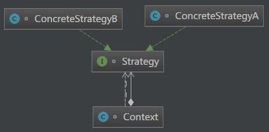

原文出处:本文由博客园博主知了一笑提供。
原文连接:https://www.cnblogs.com/cicada-smile/p/11925683.html
原文连接:https://www.cnblogs.com/cicada-smile/p/11925683.html
本文源码：GitHub·点这里 || GitEE·点这里
一、生活场景
每年双十一,各大电商平台会推出不同的满减策略,当用户的消费金额满一定额度后，会进行减去一定的优惠额度，从而来一波清仓甩卖,使用策略模式来描述该流程。
public class C01_InScene {
public static void main(String[] args) {
// 选择满减策略,走相应的计算方式
FullReduce strategy = new Full100 ();
Payment price = new Payment(strategy);
double quote = price.payment(300);
System.out.println("最终价格为：" + quote);
}
}
/**
* 付款
*/
class Payment {
private FullReduce fullReduce ;
public Payment (FullReduce fullReduce){
this.fullReduce = fullReduce ;
}
public double payment (double totalPrice){
return this.fullReduce.getPayMoney(totalPrice) ;
}
}
/**
* 金额满减接口
*/
interface FullReduce {
double getPayMoney (double totalPrice) ;
}
/**
* 不同的满减策略
*/
class Full100 implements FullReduce {
@Override
public double getPayMoney(double totalPrice) {
if (totalPrice >= 100){
totalPrice = totalPrice-20.0 ;
}
return totalPrice ;
}
}
class Full500 implements FullReduce {
@Override
public double getPayMoney(double totalPrice) {
if (totalPrice >= 500){
totalPrice = totalPrice-120.0 ;
}
return totalPrice ;
}
}二、策略模式
1、基础概念
策略模式属于对象的行为模式。策略模式中定义算法族，分别封装起来，让他们之间可以互相替换，此模式让算法的变化独立于使用算法的客 户端。
2、模式图解

3、核心角色
- 环境角色
持有一个Strategy策略接口角色的引用。
- 抽象策略角色
通常由一个接口或抽象类实现。此角色给出所有的具体策略类要实现的接口。
- 具体策略角色
包装相关的算法或业务流程。
4、源码实现
public class C02_Strategy {
public static void main(String[] args) {
Strategy strategy = new ConcreteStrategyB() ;
Context context = new Context(strategy) ;
context.userMethod();
}
}
/** 环境角色类 */
class Context {
//持有一个具体策略的对象
private Strategy strategy;
/**
* 构造函数，传入一个具体策略对象
* @param strategy 具体策略对象
*/
public Context(Strategy strategy){
this.strategy = strategy;
}
public void userMethod (){
this.strategy.strategyMethod();
}
}
/** 抽象策略类 */
interface Strategy {
// 策略方法
void strategyMethod () ;
}
/** 具体策略类 */
class ConcreteStrategyA implements Strategy {
@Override
public void strategyMethod() {
System.out.println("策略A方法");
}
}
class ConcreteStrategyB implements Strategy {
@Override
public void strategyMethod() {
System.out.println("策略B方法");
}
}三、策略模式总结
策略模式的关键是：变化的与不变分离，体现了“对修改关闭，对扩展开放”原则。客户端增加行为不用修改原有代码，只要添加一种策略即可，易于切换、易于理解、易于扩展。策略过多是会导致类数目庞大，变得难以维护。
四、源代码地址
GitHub·地址
https://github.com/cicadasmile/model-arithmetic-parent
GitEE·地址
https://gitee.com/cicadasmile/model-arithmetic-parent：策略模式1.png)